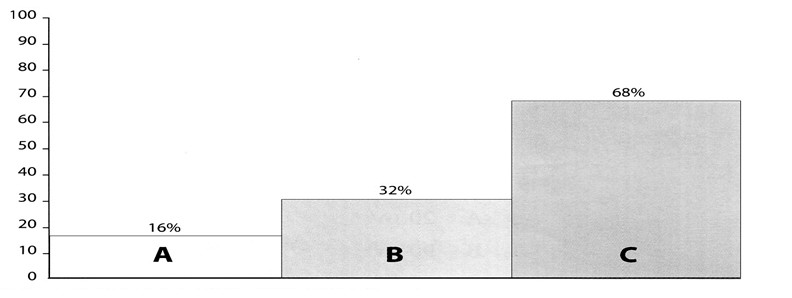
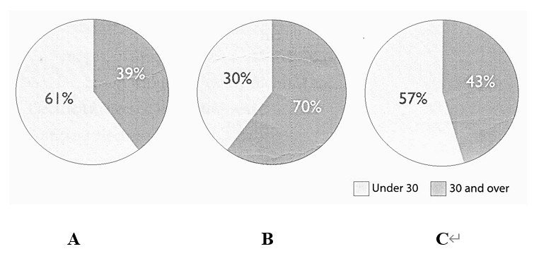
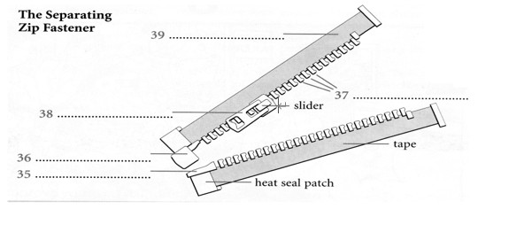

Choose the correct letters A-C.
Questions 11 - 12
Choose the correct letters A-C.


Complete the sentences below.
Write NO MORE THAN THREE WORDS for each answer.
What does Katy say about the Language Centre?
Choose TWO letters A-F
Which TWO of the following can you watch on the second floor?
Choose THREE letters A-E
Choose TWO letters A-E
Which TWO should you tell the librarian?
Which TWO of these can you do at the Language Centre?
SECTION 4 QUESTIONS 31 - 40
Look at the table.
Write NO MORE THAN TWO WORDS OR A NUMBER for each answer.
| The Zip Fastener | ||||
| 1851 | Howe | 'Automatic Continuous Clothing Closures' |
commercial potential only |
USA |
| 1893 | Judson | ‘Clasp Locker’ | commercial failure | 31. |
| 1908 | Sundback | ‘Hookless Fastener’ | commercial 32. |
Sweden |
| 33. | Kynoch | ‘Ready Fastener’ | commercial success | UK |
| 1920s | 34. | ‘Zipper’ | commercial success | USA |
Label the zip. Write NO MORE THAN THREE WORDS for each answer.

Choose the correct letters A, B or C.